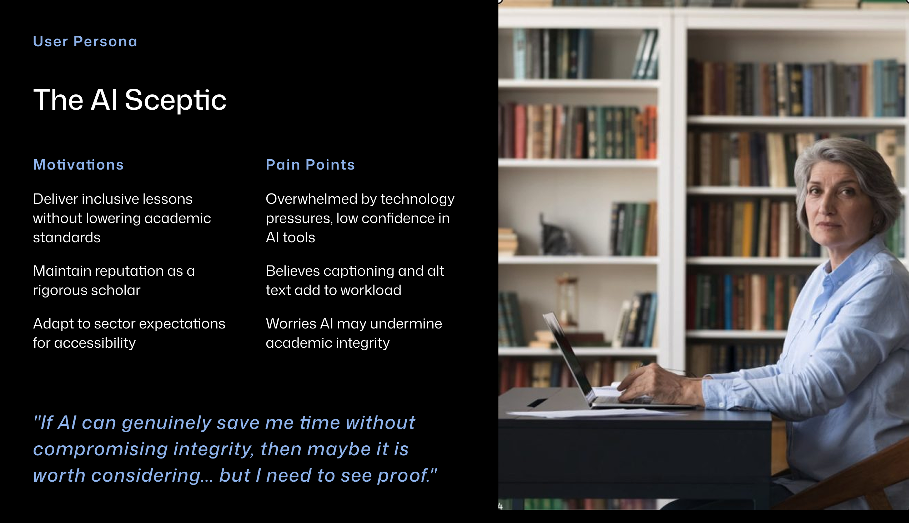

A four-module blended program helping university lecturers use AI tools to create inclusive, compliant course materials. This case study focuses on Module 2, built in Articulate Rise.
The first audio clip is deliberately recorded in a noisy environment. Hear the problem before the explanation.
Launch module →The Problem
Australian universities are required to meet the Disability Standards for Education (2005), with TEQSA guidance tightening since 2024. Most lecturers care about their students. The gap is time and know-how: captioning a lecture or writing alt text for a week of slides is slow, manual work.
AI tools can close that gap. But without guidance, staff adopt them uncritically and assume they have met the standard when they have not. The design challenge was to translate WCAG 2.1 AA, AI ethics, and accessibility compliance into practical, learnable skills for people who are not technologists.

Learner persona grounded in published research on barriers faced by higher education teaching staff, including TEQSA guidance (2024) and Varsik and Vosberg (2024).
The Solution
Rather than a single module, the program moves lecturers through four stages: understanding why accessibility matters, practising AI tools on real content, embedding new habits into existing workflows, and sharing with peers. Module 2 is where the hands-on AI practice happens.
Module 4 is a live synchronous workshop rather than another self-paced module because shifting academic culture around accessibility compliance requires social learning and peer accountability. A standalone digital module can build individual knowledge but it cannot create the shared commitment that comes from colleagues discussing their own materials together in real time.
Program flow. Module 2 is the built deliverable. Modules 1, 3, and 4 are fully designed and documented.
Module 1 · 1 hr
Why accessibility matters, disability standards and WCAG. Outcome: lecturers identify accessibility gaps in their own materials.
Module 2 · 2 hrs · Built
Using AI to create captions and alt text, evaluating ethical risks. Outcome: lecturers apply AI tools to their own content and critically evaluate outputs.
Module 3 · 1.5 hrs
Applying checklists, redesigning one personal resource. Outcome: lecturers integrate accessibility practices into daily teaching.
Module 4 · 2 hrs · Live workshop
Sharing improved resources, peer discussion and breakout review. Outcome: community of practice for accessibility and AI adoption.
Key Design Decisions
The first audio clip in Lesson 2.1 is deliberately recorded in a noisy environment. Learners hear the problem before they are told what it is. Merrill's activation principle applied directly: connect to experience first, then introduce the concept.
The caption review activity uses matching, multiple choice, and fill-in-the-blank across education, health, and everyday contexts. Format variation reflects UDL's multiple means of action and expression. Context variation stops learners from pattern-matching without actually reading the captions.
Every image has alt text. Audio clips include transcripts. Colour contrast was checked against WCAG 2.1 AA. A module teaching accessibility standards cannot afford to fail them. Practising what it preaches was a non-negotiable design constraint, not an afterthought.
Design Artefacts
Two rubrics were developed to serve a dual purpose: as scaffolds during the module to guide learners through evaluating AI-generated content, and as job aids lecturers can keep at their desk and use independently after the program ends.
| Criteria | Excellent (3) | Needs Improvement (2) | Unacceptable (1) |
|---|---|---|---|
| Conciseness | Under 125-150 characters or 1-2 sentences. | Too long (150+ characters) or multiple paragraphs for simple images. | Massive blocks of text that screen readers will cut off. |
| Context and Relevance | Describes the meaning and intent of the image within the page. | Describes the image literally but misses the instructional point. | Irrelevant fluff or unrelated descriptions. |
| Redundancy | Omits "Image of," "Picture of," or "Graphic of". | Includes redundant prefixes but is otherwise accurate. | Completely reads out the file name (e.g., IMG_4932.png). |
| Text Transcription | Accurately includes all visible text critical to the graphic. | Includes the text but misidentifies fonts, colours, or layout. | Ignores or completely hallucinates text written in the image. |
| Criteria | Excellent (3) | Needs Improvement (2) | Unacceptable (1) |
|---|---|---|---|
| Accuracy and Spelling | Over 98% accuracy. Correctly spells industry terms, names, and jargon. | Minor spelling errors or awkward phrasing that do not confuse the viewer. | Heavy hallucination, poor homophone choices, or gibberish. |
| Timing and Sync | Captions appear exactly when words are spoken with no noticeable lag. | Captions trail slightly or flash on screen too briefly to read. | Completely out of sync; audio and text do not align. |
| Speaker Identification | Clearly attributes dialogue to correct speakers (e.g., [John] Hello!). | Dialogue is present but unclear who is speaking in crowded scenes. | Speaker IDs entirely missing, jumbled, or completely incorrect. |
| Non-Speech Elements | Notes crucial non-verbal audio (e.g., [Laughter], [Dramatic music plays]). | Only notes dialogue; background music and sound effects ignored. | Adds non-speech descriptors in nonsensical places or ignores important audio. |
Design Process
Needs analysis grounded in published research: Disability Standards for Education (2005), TEQSA guidance (2024), and evidence on skill gaps in higher education. UX research methods applied to identify the specific barriers, motivations, and confidence levels of the target audience before any content was written.
Merrill's First Principles of Instruction informed the instructional strategy, particularly activation, demonstration, application, and integration. Content was chunked deliberately to reduce cognitive load: each lesson follows the same structure so learners can predict what is coming and focus on the content rather than the interface.
Full frame-by-frame storyboard built in Miro with block types, scripts, media specifications, and developer notes before any screen was developed in Rise.
Storyboard reviewed by a fellow practising teacher. Feedback identified a sequencing issue: the alt text guide was positioned after the sorting activity when learners needed it before. Repositioned before development began.
Generative AI used to draft content, generate quiz stems, and create video and audio assets. Every output reviewed and edited before inclusion. All images given alt text, audio transcripts added, colour contrast checked against WCAG 2.1 AA.
Full storyboard in Miro. Each frame includes block type, script, media specification, and developer notes.
Accessibility standards, AI ethics guidance, and higher education compliance requirements were synthesised from multiple authoritative sources and translated into practical learning activities, assessment tasks, and job aids.
Outcomes
This program was developed as a learning design prototype and evaluated through peer review rather than live delivery with the target audience. The storyboard was reviewed by a practising teacher before build, resulting in a documented sequencing change.
Future evaluation would follow Kirkpatrick's levels: Level 2 (Learning) through pre and post rubric assessment of alt text written by participants; Level 3 (Behaviour) by tracking the percentage of course materials uploaded to the LMS that pass accessibility checks three months after completion.
Reflection
The experiential audio approach worked well as an entry point: hearing the problem before reading the explanation created immediate relevance. If developed further, I would pilot the module with practising university lecturers, measure changes in confidence and accessibility knowledge, and use that data to refine the content sequencing and timing assumptions built into the design.
A professional development program for university academic staff.
Launch module